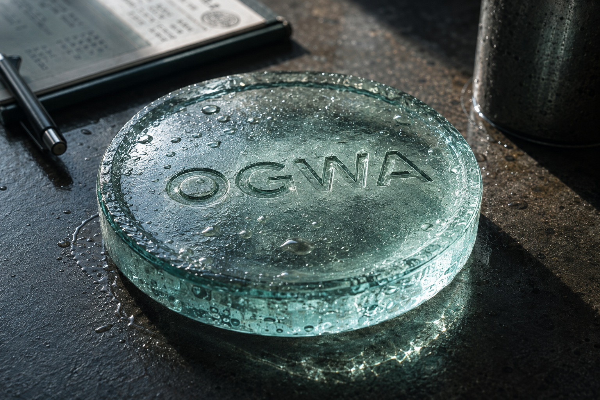
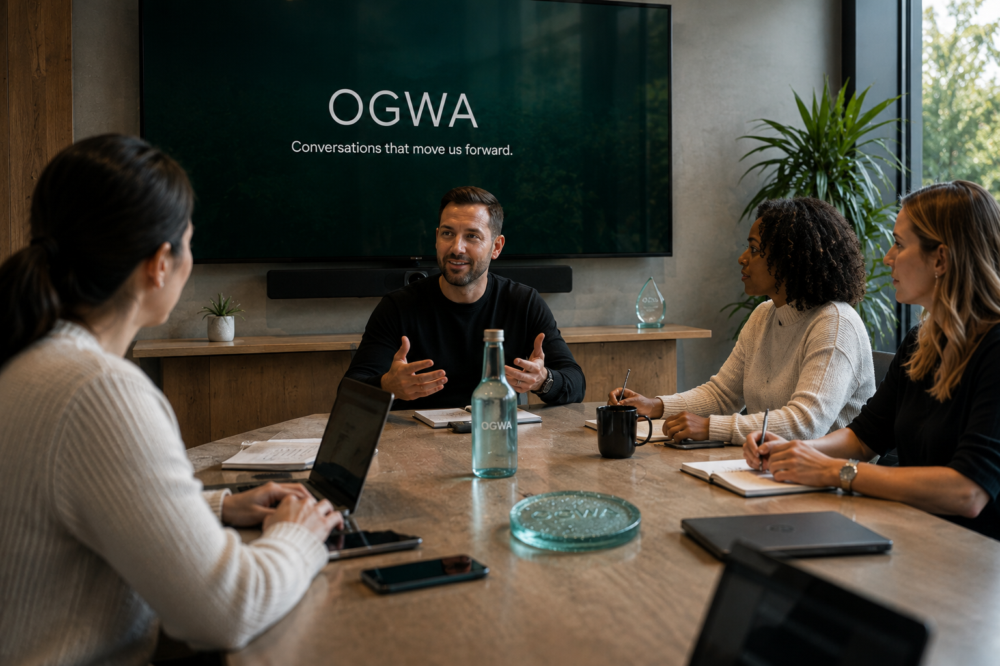
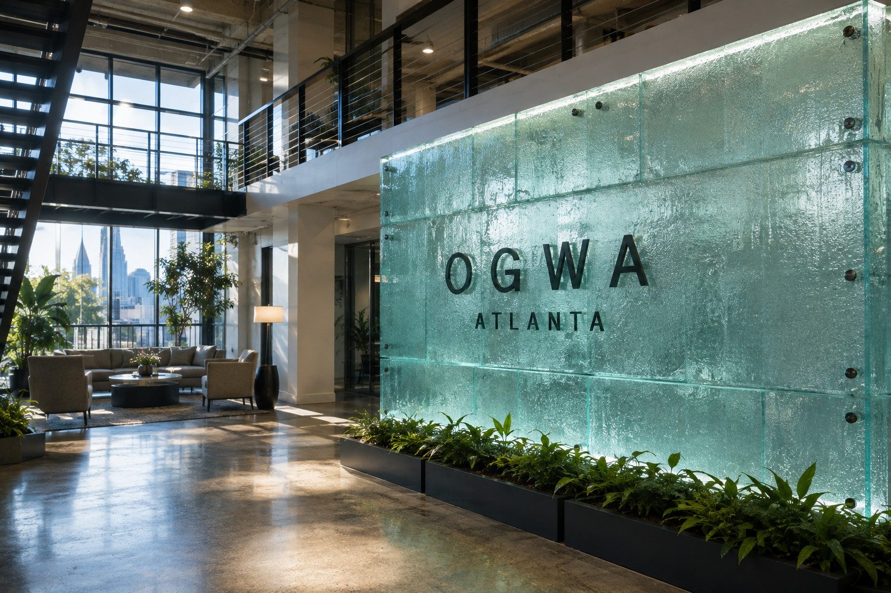
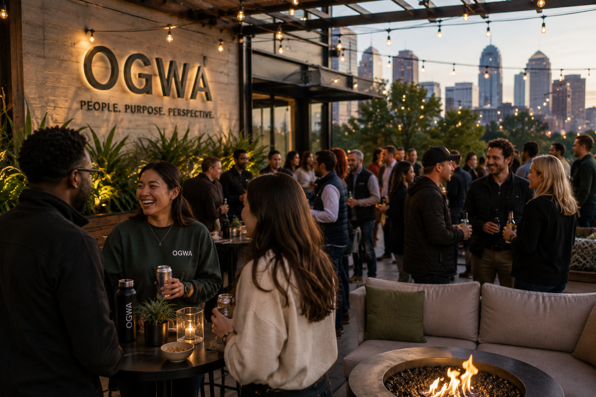
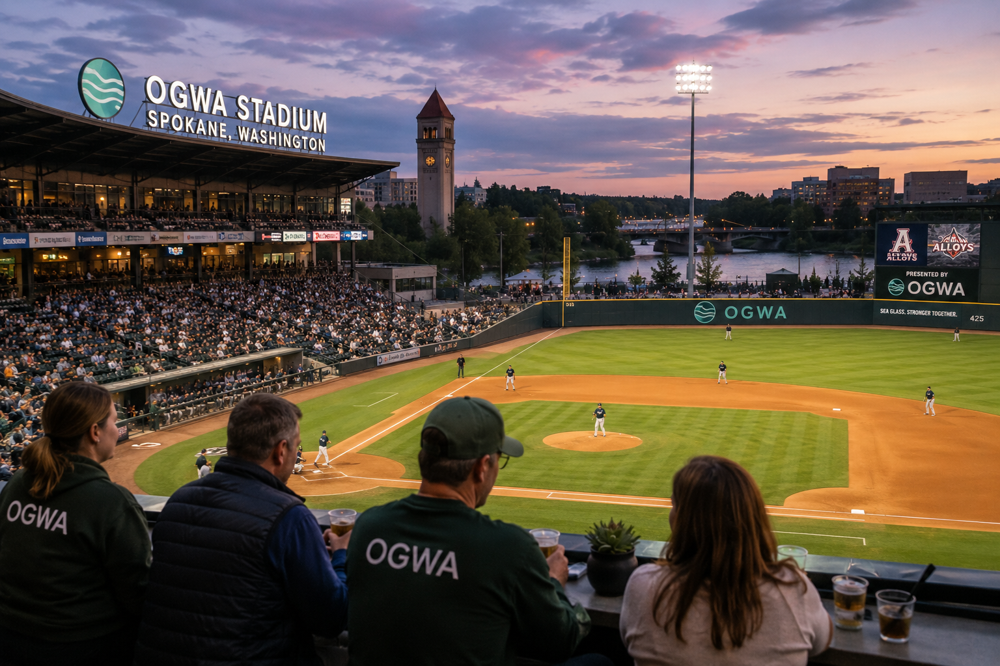
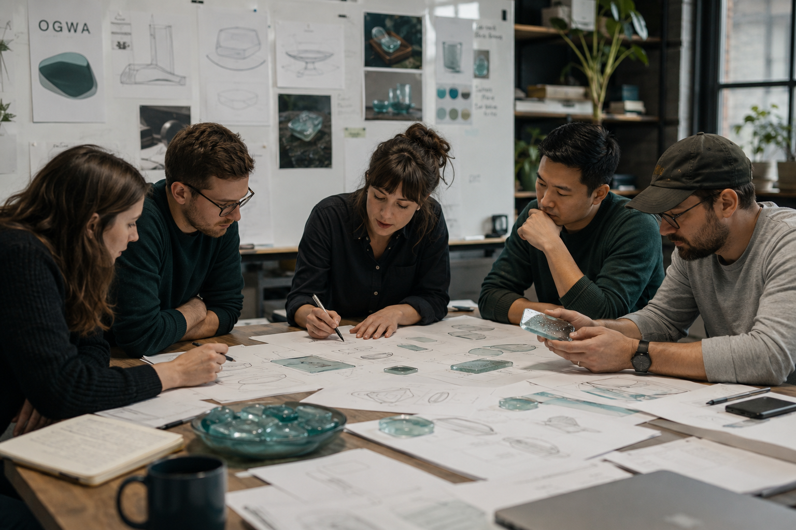

Around OGWA
A little something new is landing on desks.
You'll understand soon.
Here's what matters across OGWA today.

Growth is changing how work moves across OGWA. This week: three decisions we're making to keep speed without creating unnecessary complexity.
Read the signal →
You'll understand soon.
Review your 2027 elections and submit changes by 5 p.m.
Updated process, timeline, and support resources are live.
New employees join teams across OGWA this week.

Daniel talks fulfillment, growth, job uncertainty — and eventually gets dragged into the pineapple debate.
People · Places · Product

A look at the space, the teams and the details shaping work at OGWA.

Good people, good conversation and a little time away from desks.

Employees joined the Alloys for a summer night at OGWA Stadium.

A look inside the work shaping what OGWA builds next.
The system behind the screen
Employees can get somewhere quickly. Everyday needs are treated as essential infrastructure.
The homepage makes organizational priorities visible instead of treating every announcement equally.
Leadership, operations, employee stories and recurring editorial rhythms reinforce the same organizational narrative.
The intranet becomes less of a place to publish things and more of a system for helping the organization make sense of itself.